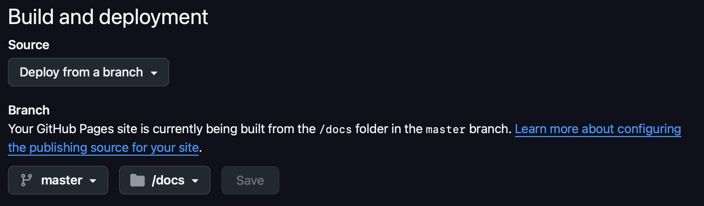
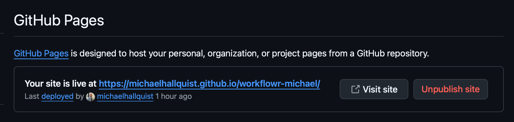

Code
# Install once if needed
install.packages("workflowr")PSYC 859 Data Management and Visualization
January 15, 2026
This assignment is due by 2/4/2026 at 8am.
This assignment builds directly on the workflowr vignette: https://workflowr.github.io/workflowr/articles/wflow-01-getting-started.html. Your goal is to create a new workflowr project with a clean structure, publish at least one analysis file, and make it available as a GitHub Pages site.
I don’t expect that you necessarily use workflowr in the class or more generally, but I think it is useful to see how the package takes a structured approach to:
Before starting, make sure you have:
workflowr package installedCreate a new project named something like workflowr-<your-name> in a location you can find later. The wflow_start command will setup a new workflowr project in the speecified directory (by default, it does not overwrite existing projects).
Open the project in RStudio (File > Open Project) and review the default folders: analysis/, data/, code/, output/, and docs/.
Create a new analysis Rmarkdown file at analysis/01-getting-started.Rmd. You can use wflow_open if you wish, or just File > New File > R Markdown.
In the Rmd file, include the following:
data/ folder (e.g., a CSV from data.gov or another public domain source).data/ and prints a small summary (e.g., str() or summary())Next, add this new analysis page to your site index so it appears on the rendered site. Open analysis/index.Rmd and add a link under the Analysis section. Use a relative link to the rendered HTML file:
- [Getting started](01-getting-started.html)Use workflowr to build the site and check its status.
Before publishing your own analysis file, publish the default site pages once so they are tracked by Git and appear on your site (these files are created by wflow_start()):
Now publish the new analysis page using workflowr so it is tracked by Git.
After publishing (basically concretizing a change), connect the project to GitHub with your username:
Setup your Github repository using the wflow_use_github function. I chose the Oauth route when prompted, but either is fine.
GitHub no longer accepts your GitHub account password for pushing over HTTPS. Instead, you will create a Personal Access Token (PAT) and use it in place of a password when wflow_git_push() asks.
workflowr-week2) and set an Expiration (e.g., 30–90 days). Under Repository access, choose Only select repositories and select the workflowr repo. Under Repository permissions, add Actions, Contents, and Pages; for each one, set Access to Read and write in the right-hand dropdown.Treat the PAT like a password: don’t share it and don’t paste it into files that you will commit to GitHub.
When prompted:
If wflow_git_push() fails or gives strange errors, see the Troubleshooting section below for a command-line fallback (you will still use your PAT when asked for a password).
In GitHub, enable Pages for the docs/ folder on the branch you pushed (often main, but sometimes master).
Guidance here: https://docs.github.com/en/pages/quickstart
After configured, this should look like the following: 
After a few minutes of setting this, the top part of the GitHub Pages for the repo (https://github.com/<username>/<reponame>/settings/pages) should look something like this:

Open your GitHub Pages site and confirm:
GitHub no longer accepts account passwords for Git pushes over HTTPS. You must use either:
Both options are secure. Unless you already use SSH for GitHub, use the PAT option below.
Step 1: Create a PAT in GitHub
Step 2: Push from R with workflowr (preferred)
Run this from your R session:
When prompted: - Username: your GitHub username - Password: paste your PAT
If wflow_git_push() isn’t working (or gives confusing errors), try the command line instead:
If your default branch is master, replace main with master. If asked whether to save the credential, say Yes (recommended).
Step 1: Generate an SSH key
Press Enter to accept the default file location. Add a passphrase if you want extra security.
Step 2: Add your key to the SSH agent
Step 3: Add the public key to GitHub
Copy the output. Then in GitHub: Settings → SSH and GPG keys → New SSH key → paste the key → Add.
Step 4: Switch your repo remote to SSH
Step 5: Test and push
Then push from R (preferred):
If that fails, push from the command line:
If your default branch is master, replace main with master.
If you want to work entirely in R with workflowr (no terminal commands), you can still authenticate:
PAT (HTTPS): Run wflow_git_push() from R. When it asks for a password, paste your PAT.
If you want to avoid re-typing it each time, you can store the PAT in your .Renviron file as GITHUB_PAT, restart R, then push like this:
SSH: Switch the remote to SSH using workflowr, then push:
If SSH fails with a message about SSH support, use HTTPS + PAT or the command line (git push) instead.
wflow_git_push() fails with a git2r::push() errorSome students see errors like:
Error in 'git2r_push': unexpected http status code: 400This is usually an authentication problem (HTTPS + no password support). Two fixes:
git2r entirely and push with the Git CLI (still using a PAT if you are on HTTPS):If your default branch is main, replace master with main. If you don’t have Git installed, install it first (https://happygitwithr.com). If you want advice on the git2r error, search the git2r GitHub issues for “unexpected http status code 400”.
git2r::push() fails with HTTP 403 (but git push works)If you are using a PAT and see:
Error in 'git2r_push': unexpected http status code: 403It usually means the token you provided doesn’t have permission to push or git2r is not using the same stored credential that your Git command line is using.
Try these in order:
After that, git push should work without needing -u again for that repo/branch.
If the file exists in analysis/ but doesn’t appear on your GitHub Pages site, run this checklist:
wflow_build() (or wflow_publish() which builds + commits).wflow_publish("analysis/your-file.Rmd").wflow_status() and confirm the new HTML is tracked.main + /docs.This workflow keeps you in R for the main steps (default: HTTPS + PAT):
wflow_start().wflow_publish().If wflow_git_push() isn’t working, use the Git CLI instead (still using your PAT or SSH):
If you prefer SSH, set up an SSH key on GitHub first, then ensure your remote is SSH: